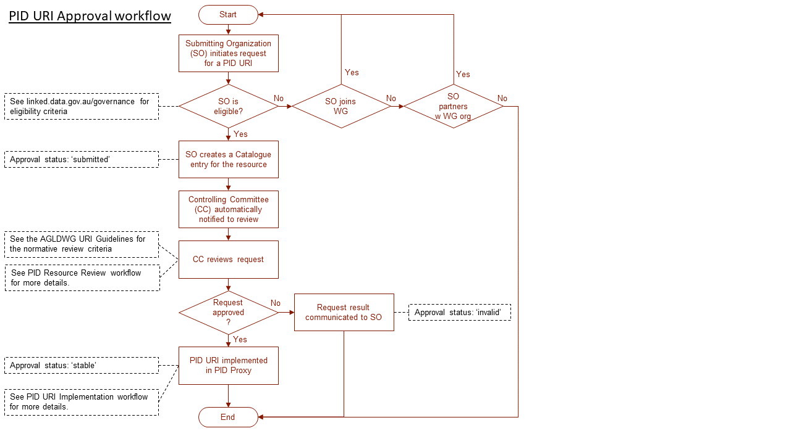

Australian Government Linked Data Working Group
Governance
The AGLDWG manages resources which help govern Linked Data resources for Australia, in particular the Internet subdomain linked.data.gov.au which provides persistent URIs (PID URIs) for Linked Data resources.
linked.data.gov.au PID URIs
Stability of the domain
In 2017 and 2018, the AGLDWG established a Memorandum of Understanding (MoU) between several Australian Federal government agencies to reserve the use of linked.data.gov.au for PID URIs and to ensure that no changes are to be made to that domain without wide consultation. That MoU is now in place. The signed MoU document is here:
In late 2018, the AGLDWG may seek to further strengthen the agreements around the use of this domain within Australian government.
Legacy PID URIs
The group also manages some legacy domains previously used to create PID URIs: environment.data.gov.au & reference.data.gov.au. We will continue to maintain the redirection of URIs created using these domains indefinitely however we will not be allocating new PID URIs using them.
PID URI Allocation
We can allocate linked.data.gov.au-based PIDs for Linked Data resources as long as they meet certain criteria. Those criteria are defined in our:
In addition to meeting Guidelines criteria, requesters of PID URIs will need to follow a requesting process which is outlined here.
{kind=link}
Fig. 1: Workflow for PID URI approval
In Figure 1 above above, the agents Submitting Organisation & Controlling Committee are defined as per ISO111791. The "Approval status" is the status of the request as recorded in the AGLDWG Catalogue in accordance with the Registry Ontology's Status Vocabulary.
We also maintain a catalogue of Linked Data resources known to and assisted by the group, see:
Note that the information here will only be corrected and fully in effect if approved by the Group at the 2018 AGM on the 2nd of August.
References
[1] International Organization for Standardization / International Electrotechnical Commission "ISO/IEC 11179, Information Technology -- Metadata registries (MDR)", standard. http://metadata-standards.org/11179/, accessed 2018-06-07.